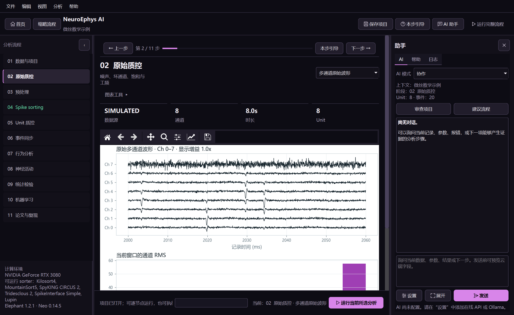

NeuroEphys AI
下载 / Downloads ↗
THE WORKBENCH GUIDE · 1.2
NeuroEphys AI 使用手册
从采集记录到质控、排序和结果导出。按手头的数据选择起点，在同一项目里保存参数、图表和实验判断。
中文手册
↗
第一次使用、真实数据入口、逐项操作与问题排查。
English manual
↗
Getting started, data inputs, working guides and troubleshooting.
完成第一个小项目 →
认识工作区 →
按操作查阅 →
App 与 Python 包 →

教学数据界面。Windows App 支持离线分析；在线 AI 按需要配置。